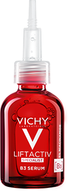
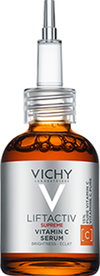
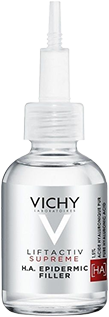

REKOMENDOWANY PRZEZ POLSKIE TOWARZYSTWO MEDYCYNY EsTETYCZNEJ I ANTI-AGING
Działanie: skuteczna redukcja przebarwień i zmarszczek
- Skuteczność od pierwszego zastosowania: skóra jest wygładzona i pełna blasku
- Dzień po dniu przebarwienia i zmarszczki są zredukowane, a koloryt skóry wyrównany
- Formuła inspirowana nieinwazyjnymi zabiegami medycyny estetycznej
- Silne składniki aktywne działają na różnych poziomach naskórka, aby skutecznie zredukować przebarwienia
Dermatolodzy potwierdzają
aż do -71% przebarwień(1)
Silne składniki aktywne
5% niacynamid (witamina B3)
Działa w głębszych warstwach naskórka, aby widocznie zmniejszyć przebarwienia oraz ograniczyć powstawanie nowych.
8% kwas glikolowy + składniki peelingujące
Delikatnie złuszczają powierzchnię skóry, aby wydobyć jej blask i ujednolicić koloryt.
witamina cg
Antyoksydant o działaniu wyrównującym koloryt w górnych warstwach naskórka.
bio-peptyd
Krótkie fragmenty aminokwasów o działaniu przeciwzmarszczkowym.
Odkryj serum dopasowane do Twoich potrzeb
PRZECIW PRZEBARWIENIOM
Liftactiv Specialist B3 przeciw przebarwieniom
ROZŚWIETLAJĄCE
Liftactiv Supreme Witamina C
Serum
Serum
Przeciwstarzenie, przebarwienia, jednolity koloryt skóry.
Przeciwstarzenie, szarość, zmęczenie skóry, zmarszczki
Redukuje przebarwienia, redukuje zmarszczki, wyrównuje koloryt skóry.
Widocznie rozświetla, wygładza strukturę skóry, nadaje efekt ujędrnienia, redukuje drobne zmarszczki
Lekka, szybko się wchłania, beztłuszczowa.
Bezzapachowa, nietłusta nieklejąca się. Nie wybłyszcza.
REDUKUJE DROBNE zMARSZCZKI
Liftactiv Epidermic Filler z kwasem hialuronowym
REDUKUJE GŁĘBOKIE ZMARSZCZKI
Liftactiv Retinol Specialist na noc
Serum
Serum
Przeciwstarzenie, delikatne linie, zmarszczki
Przeciwstarzenie, ujędrnienie skóry, zmarszczki
Wypełnia kontur twarzy i oczu, stopniowo redukuje zmarszczki i drobne linie
Zmniejsza pory, wyczuwalnie ujędrnia i wygładza, dając efekt odnowionej skóry
Lekka, szybko się wchłania, płynna.
Bezzapachowa, szybko się wchłania, lekka, mleczna, bez efektu przetłuszczania.
Rutyna redukująca przebarwienia i zmarszczki
LIFTACTIV SPECIALIST B3 SERUM
Skoncentrowane serum redukujące przebarwienia i zmarszczki z 5% niacynamidu.
Dodaj do koszyka
LIFTACTIV COLLAGEN SPECIALIST
Krem na dzień korygujący oznaki utraty kolagenu w skórze.
Dodaj do koszykaLIFTACTIV collagen specialist noc
Wzmacniający krem na noc, który koryguje oznaki utraty kolagenu w skórze.
Dodaj do koszykaCzęsto zadawane pytania dotyczące serum do twarzy
Jak nakładać serum do twarzy?
W przeciwieństwie do kremów i środków nawilżających, serum do twarzy należy nakładać w małych ilościach, ponieważ są bardzo skoncentrowane. Przed nałożeniem na skórę należy oczyścić ręce i twarz. Nałóż 2 lub 3 krople serum na opuszki palców i delikatnie wklepuj ruchami od góry, aż do całkowitego wchłonięcia.
Jakie jest najlepsze przeciwzmarszczkowe serum do twarzy Vichy?
Najlepsze sera do twarzy dla starzejącej się skóry to te z gamy Liftactiv, ponieważ ich formuły stworzone są ze skoncentrowanych istotnych składników dermatologicznych, które działają na drobne linie i zmarszczki, brak jędrności oraz dodają blasku skórze.
W jakim wieku stosować serum do twarzy?
Serum do twarzy działa na różne problemy skórne, takie jak trądzik, przetłuszanie się lub wysuszanie skóry, przebarwienia lub zmarszczki i drobne linie. Możesz rozpocząć stosowanie serum w wieku 20 lat i kontynuować je przez resztę życia, dostosowując serum do problemów skórnych.